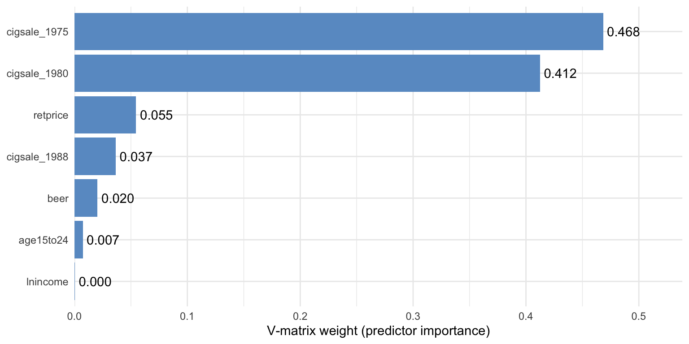
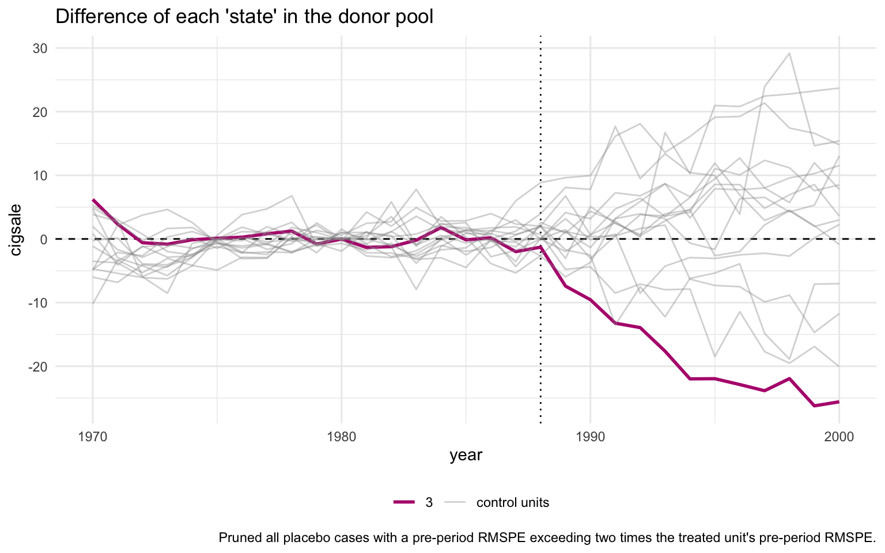

flowchart LR
A["1. synthetic_control()<br/>declare treated unit<br/>and intervention time"] --> B["2. generate_predictor()<br/>define matching variables<br/>(one call per time window)"]
B --> C["3. generate_weights()<br/>optimise donor weights<br/>(quadratic programming)"]
C --> D["4. generate_control()<br/>build synthetic California<br/>and post-period gap series"]
D --> E["5. plot_/grab_ helpers<br/>trends, weights,<br/>placebos, MSPE ratio,<br/>Fisher exact p-value"]
style A fill:#6a9bcc,stroke:#141413,color:#fff
style B fill:#6a9bcc,stroke:#141413,color:#fff
style C fill:#6a9bcc,stroke:#141413,color:#fff
style D fill:#d97757,stroke:#141413,color:#fff
style E fill:#00d4c8,stroke:#141413,color:#141413
5 Classical Synthetic Control
5.1 The SCM idea
Synthetic Control stops using one control state. Instead, it builds a weighted combination of donor states that matches the treated unit’s pre-period as closely as possible on a chosen set of predictors. The weighted combination is “synthetic California”. The gap between observed California and synthetic California is the estimated effect.
Why it works where DiD failed. Difference-in-Differences against Nevada (chapter 4) needed parallel pre-trends with one neighbour. Synthetic Control needs parallel pre-trends with a data-driven blend of many neighbours. The optimisation does the matching, so the analyst no longer has to pick “the right” control state by hand.
5.2 The four-stage tidysynth pipeline
Stages 1–4 produce the estimate. Stage 5 is a battery of inspection helpers — plot_trends(), plot_differences(), plot_weights(), plot_placebos(), plot_mspe_ratio(), grab_unit_weights(), grab_predictor_weights(), grab_balance_table(), grab_significance() — that turn the fitted object into figures and tables. We use all of them below.
5.3 The equation
Let \(X_1\) be the vector of \(k\) pre-period predictors for the treated unit (California), and let \(X_0\) be the \(k \times J\) matrix holding the same predictors for the \(J = 38\) donor states. The Synthetic Control estimator chooses donor weights \(w\) to minimise the (V-weighted) discrepancy between treated and synthetic on the predictors:
\[w^* \, = \, \arg\min_{w \in \mathcal{W}} \, \big(X_1 - X_0 w\big)^\top V \big(X_1 - X_0 w\big),\]
subject to
\[\mathcal{W} = \big\{w \in \mathbb{R}^J \,:\, w_j \ge 0 \,\, \forall j, \,\, \textstyle\sum_{j=1}^J w_j = 1\big\}.\]
The diagonal matrix \(V\) holds the predictor importance weights — the optimiser can care more about pre-period cigarette sales than about, say, beer consumption (we inspect \(V\) below). Once \(w^*\) is solved, the synthetic California outcome at any year \(t\) is
\[\widehat{Y_{1t}(0)} = \sum_{j=1}^J w_j^* \, Y_{jt},\]
and the ATT over 1989–2000 is the mean post-period gap between observed California and that synthetic counterfactual.
5.4 Setup and data
Code
library(tidyverse)
library(tidysynth)
set.seed(42)Code
prop99 <- read_rds("data/proposition99.rds") |> as_tibble()5.5 Fit the synthetic-control pipeline
Code
prop99_syn <- prop99 |>
# 1. Declare the panel structure: outcome, unit, time, treated unit
# ("California"), and the last full pre-period year (1988).
# generate_placebos = TRUE also fits the model treating each donor
# state as treated, for the permutation test below.
synthetic_control(
outcome = cigsale, unit = state, time = year,
i_unit = "California", i_time = 1988,
generate_placebos = TRUE
) |>
# 2. Predictors averaged over the full pre-period (1980-1988).
generate_predictor(
time_window = 1980:1988,
lnincome = mean(lnincome, na.rm = TRUE),
retprice = mean(retprice, na.rm = TRUE),
age15to24 = mean(age15to24, na.rm = TRUE)
) |>
# 2b. beer is sparser, so use a narrower window where data is densest.
generate_predictor(time_window = 1984:1988,
beer = mean(beer, na.rm = TRUE)) |>
# 2c. Three "lagged outcomes" - cigsale at three pre-period dates.
# These pin synthetic California's pre-period trajectory.
generate_predictor(time_window = 1975, cigsale_1975 = cigsale) |>
generate_predictor(time_window = 1980, cigsale_1980 = cigsale) |>
generate_predictor(time_window = 1988, cigsale_1988 = cigsale) |>
# 3. Solve the constrained QP for donor weights w*. The three IPOP
# parameters are tuning knobs for the interior-point optimiser.
generate_weights(optimization_window = 1970:1988,
margin_ipop = .02,
sigf_ipop = 7,
bound_ipop = 6) |>
# 4. Compute the synthetic California series from w* and donor outcomes.
generate_control()Predictor choices. Seven predictors are passed in. Three are pre-period covariate averages over the full pre-period (lnincome, retprice, age15to24 over 1980–1988). One uses a narrower window where data is densest (beer over 1984–1988). Three are lagged outcomes — cigarette sales themselves at 1975, 1980, and 1988. The lagged outcomes are the most important trick: anchoring the synthetic control on the treated unit’s own pre-period outcome levels at multiple time points forces the synthetic series to track California’s pre-1988 trajectory closely.
5.6 Donor weights and predictor weights
The optimisation produces two weight vectors that drive the entire fit. Both are extractable as tidy tables.
Code
grab_unit_weights(prop99_syn) |>
arrange(desc(weight)) |>
head(8)# A tibble: 8 × 2
unit weight
<chr> <dbl>
1 Utah 0.342
2 Nevada 0.238
3 Montana 0.209
4 Colorado 0.149
5 Connecticut 0.0617
6 New Mexico 0.000434
7 Idaho 0.00000341
8 Wisconsin 0.00000254Code
grab_predictor_weights(prop99_syn) |>
arrange(desc(weight))# A tibble: 7 × 2
variable weight
<chr> <dbl>
1 cigsale_1975 0.468
2 cigsale_1980 0.412
3 retprice 0.0546
4 cigsale_1988 0.0366
5 beer 0.0204
6 age15to24 0.00733
7 lnincome 0.000291Two things to notice.
- Five states absorb essentially 100% of the donor weight. Utah, Nevada, Montana, Colorado, Connecticut. Every other state gets effectively zero. California is matched mostly to other Western/sunbelt states with similar age structure and cigarette price levels, plus Connecticut as a smoking-rate counterweight from the east.
- The two earliest cigsale levels dominate the V matrix.
cigsale_1975andcigsale_1980together get roughly 88% of the predictor weight. The four behavioural and demographic covariates get less than 9% combined. The optimiser has effectively decided: “the best way to predict California’s cigarette sales is using other states’ cigarette sales.”
For a one-line visual of both weight vectors, tidysynth ships a plot_weights() helper:
Code
plot_weights(prop99_syn)
5.6.1 A closer look at the V matrix
The combined plot_weights() view is convenient, but the V matrix deserves a stand-alone chart because it answers a different question than the donor weights. Donor weights say which states mimic California; the V matrix says which variables the optimiser used to decide what “mimics” means.
Code
predw_df <- grab_predictor_weights(prop99_syn) |>
mutate(variable = fct_reorder(variable, weight))
ggplot(predw_df, aes(x = weight, y = variable)) +
geom_col(fill = "#6a9bcc") +
geom_text(aes(label = sprintf("%.3f", weight)), hjust = -0.12) +
scale_x_continuous(expand = expansion(mult = c(0, 0.15))) +
labs(x = "V-matrix weight (predictor importance)", y = NULL) +
theme_minimal()
Two readings of the same picture, one practical and one cautionary.
- Practical reading. Two lagged outcomes (
cigsale_1975andcigsale_1980) carry the bulk of the matching information. The optimiser has decided that California’s pre-period cigarette sales — at multiple time points — are the best fingerprint to match. - Cautionary reading. The V matrix is not a causal ranking. It tells you which variables were useful for matching the treated unit’s pre-period, not which variables cause the outcome.
Common pitfall. Treating the V matrix as a list of causal drivers. It is a list of good pre-period predictors for one specific unit, not a structural model of smoking.
5.7 The estimate
Code
# grab_synthetic_control() returns a tidy tibble with observed (real_y)
# and synthetic (synth_y) cigsale for every year. We restrict to the
# post-period and compute the per-year gap.
sc_post <- grab_synthetic_control(prop99_syn) |>
filter(time_unit > 1988) |>
mutate(dif = real_y - synth_y)
# Average the per-year gap to recover the ATT.
mean(sc_post$dif)[1] -18.84561The Synthetic Control ATT is approximately \(-18.85\) packs/capita averaged over 1989–2000. This is the book’s primary causal estimate and within rounding of the canonical Abadie et al. (2010) result.
Code
plot_trends(prop99_syn)Warning: Using `size` aesthetic for lines was deprecated in ggplot2 3.4.0.
ℹ Please use `linewidth` instead.
ℹ The deprecated feature was likely used in the tidysynth package.
Please report the issue to the authors.
The pre-period fit is excellent — the synthetic and observed series are nearly indistinguishable through 1988. A substantial gap opens immediately after 1989, widening to roughly 30 packs by 2000.
5.8 Predictor balance: did the matching work?
grab_balance_table() shows California, synthetic California, and the unweighted donor average side-by-side on every predictor.
Code
grab_balance_table(prop99_syn)# A tibble: 7 × 4
variable California synthetic_California donor_sample
<chr> <dbl> <dbl> <dbl>
1 age15to24 0.174 0.174 0.173
2 lnincome 10.1 9.85 9.83
3 retprice 89.4 89.4 87.3
4 beer 24.3 24.2 23.7
5 cigsale_1975 127. 127. 137.
6 cigsale_1980 120. 120. 138.
7 cigsale_1988 90.1 91.4 114. On every variable, synthetic California is far closer to California than the unweighted donor average is. The most dramatic improvement is on the lagged outcomes: cigsale_1988 is roughly 90 for California vs ≈91 for the synthetic — a near-perfect match — while the unweighted donor average is around 114. That gap of ~24 packs is exactly the bias the naive pre-post method silently absorbed.
5.9 Visualising the post-period gap
plot_trends() showed both observed and synthetic California on one canvas. The companion helper plot_differences() plots just the gap: \(Y_{1t} - \widehat{Y_{1t}(0)}\), year by year. This isolates the treatment-effect curve in its cleanest form.
Code
plot_differences(prop99_syn)Ignoring unknown labels:
• colour : ""
• linetype : ""
Read the line as the effect of Proposition 99 on California in year \(t\). The pre-period values hover near zero (the matching worked), the line drops sharply after 1989, and it stays negative — steadily widening — throughout the post-period. The 1989–2000 mean of this series is exactly the \(-18.85\) packs ATT reported above.
5.10 Inference via placebo permutation
A “standard error” computed as cross-year SD divided by \(\sqrt{N}\) is not a real sampling-distribution-based standard error. The proper Synthetic Control uncertainty quantification is a permutation test.
The recipe. Refit the synthetic-control model treating each donor state as if it had been the treated unit. Compute the post-period gap for each placebo. Compare California’s gap trajectory to those placebo trajectories. If California’s gap is extreme relative to the placebos, the policy probably did something.
Code
plot_placebos(prop99_syn)
The orange line is California; the grey lines are the donor placebos. By default, plot_placebos() prunes placebos whose pre-period mean squared prediction error (MSPE) exceeds twice California’s — those donors fit their own pre-period so badly that comparing their post-period gap to California’s would be misleading. After pruning, California’s post-period gap sits visibly below every retained placebo, which is the visual signature of a “real” treatment effect.
The unpruned variant keeps every donor for full transparency:
Code
plot_placebos(prop99_syn, prune = FALSE)
With pruning off, the grey cloud is messier and a few badly-fit donors swing wildly — but California’s post-period descent still ends up at the bottom of the bundle. The qualitative conclusion does not depend on the pruning rule.
5.11 MSPE ratio and Fisher exact p-value
A sharper version of the same test is the MSPE ratio — the ratio of post-period to pre-period mean squared prediction error. If a unit has a tight pre-period fit and a large post-period gap, the ratio is large.
Code
# grab_significance() returns one row per unit (treated + every placebo)
# with pre_mspe, post_mspe, the post/pre ratio, the unit's rank in that
# ratio, and the Fisher-style p-value (rank / n_units).
grab_significance(prop99_syn) |>
arrange(desc(mspe_ratio)) |>
head(5)# A tibble: 5 × 8
unit_name type pre_mspe post_mspe mspe_ratio rank fishers_exact_pvalue
<fct> <chr> <dbl> <dbl> <dbl> <int> <dbl>
1 California Treated 3.17 392. 124. 1 0.0256
2 Georgia Donor 3.79 179. 47.2 2 0.0513
3 Indiana Donor 25.2 770. 30.6 3 0.0769
4 West Virginia Donor 9.52 284. 29.8 4 0.103
5 Wisconsin Donor 11.1 268. 24.1 5 0.128
# ℹ 1 more variable: z_score <dbl>California’s MSPE ratio is around 124 — more than two and a half times higher than the next-highest unit. California ranks 1st out of 39 units. The Fisher exact \(p\)-value is rank divided by total units, so \(1/39 \approx 0.026\). Under the null hypothesis that Proposition 99 had no effect, the probability of seeing a unit this extreme purely by chance is about 2.6%.
Code
plot_mspe_ratio(prop99_syn)Ignoring unknown labels:
• colour : ""
The orange bar at the top is California; every blue bar below it is a placebo donor. The gap between California and the second-place state is enormous. That gap is the visual signature of “a real treatment effect that the donor pool does not naturally replicate”.
5.12 Inspecting the nested tidysynth object
prop99_syn is not a plain data frame — it is a nested tibble with one row per unit (treated unit + every donor refit as a placebo) and list-columns that hold every intermediate output of the optimisation.
Code
prop99_syn# A tibble: 78 × 11
.id .placebo .type .outcome .predictors .synthetic_control .unit_weights
<fct> <dbl> <chr> <list> <list> <list> <list>
1 Califor… 0 trea… <tibble> <tibble> <tibble [31 × 3]> <tibble>
2 Califor… 0 cont… <tibble> <tibble> <tibble [31 × 3]> <tibble>
3 Alabama 1 trea… <tibble> <tibble> <tibble [31 × 3]> <tibble>
4 Alabama 1 cont… <tibble> <tibble> <tibble [31 × 3]> <tibble>
5 Arkansas 1 trea… <tibble> <tibble> <tibble [31 × 3]> <tibble>
6 Arkansas 1 cont… <tibble> <tibble> <tibble [31 × 3]> <tibble>
7 Colorado 1 trea… <tibble> <tibble> <tibble [31 × 3]> <tibble>
8 Colorado 1 cont… <tibble> <tibble> <tibble [31 × 3]> <tibble>
9 Connect… 1 trea… <tibble> <tibble> <tibble [31 × 3]> <tibble>
10 Connect… 1 cont… <tibble> <tibble> <tibble [31 × 3]> <tibble>
# ℹ 68 more rows
# ℹ 4 more variables: .predictor_weights <list>, .original_data <list>,
# .meta <list>, .loss <list>Each list-column can be flattened with tidyr::unnest() for custom downstream work, or pulled out with one of the grab_*() helpers used above.
Code
# Flatten .outcome into a wide table: one row per (unit, year).
# The actual cigarette-sales column is named after each unit, so we
# select metadata + California's series for a clean preview.
prop99_syn |>
tidyr::unnest(cols = c(.outcome)) |>
select(.id, .placebo, .type, time_unit, California) |>
head(8)# A tibble: 8 × 5
.id .placebo .type time_unit California
<fct> <dbl> <chr> <int> <dbl>
1 California 0 treated 1970 123
2 California 0 treated 1971 121
3 California 0 treated 1972 124.
4 California 0 treated 1973 124.
5 California 0 treated 1974 127.
6 California 0 treated 1975 127.
7 California 0 treated 1976 128
8 California 0 treated 1977 126.For the tidy observed-vs-synthetic table (which is what most analyses want), the dedicated helper is more convenient:
Code
grab_synthetic_control(prop99_syn) |> head(8)# A tibble: 8 × 3
time_unit real_y synth_y
<int> <dbl> <dbl>
1 1970 123 117.
2 1971 121 119.
3 1972 124. 124.
4 1973 124. 125.
5 1974 127. 127.
6 1975 127. 127.
7 1976 128 128.
8 1977 126. 126.This is the whole point of the nested-tibble design: every step of the optimisation is introspectable from R, with no need to dig into S4 slots or attr() blobs.
5.13 Recap
| Question | Answer |
|---|---|
| What does Synthetic Control estimate? | The ATT on California, 1989–2000 |
| What is the point estimate? | \(-18.85\) packs/capita per year |
| What is “synthetic California”? | A convex combination of five Western/sunbelt states (Utah, Nevada, Montana, Colorado, Connecticut) |
| What predictors did the matching? | Mostly two lagged outcomes — cigsale_1975 and cigsale_1980 |
| How is the matching quality? | Excellent — synthetic and observed California are near-identical through 1988 |
| What is the inference statistic? | Fisher exact \(p \approx 0.026\) (California ranks 1st out of 39 on the MSPE ratio) |
| What is the design-time pitfall? | Don’t read the V matrix as a list of causal drivers — it is a list of good pre-period predictors |
Synthetic Control is the book’s headline causal estimate, and the placebo / MSPE-ratio diagnostics both confirm that California’s post-1989 trajectory is unusual relative to what other states experienced in the same window. In chapter 6 we hand the same donor information to a Bayesian model and ask whether a credible interval (a direct probability statement about the effect) tells the same story.